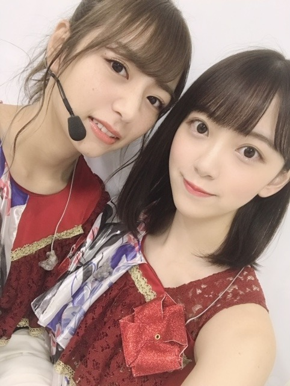
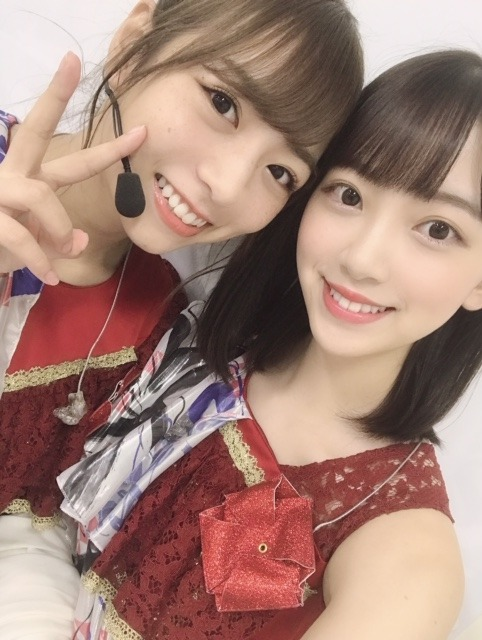
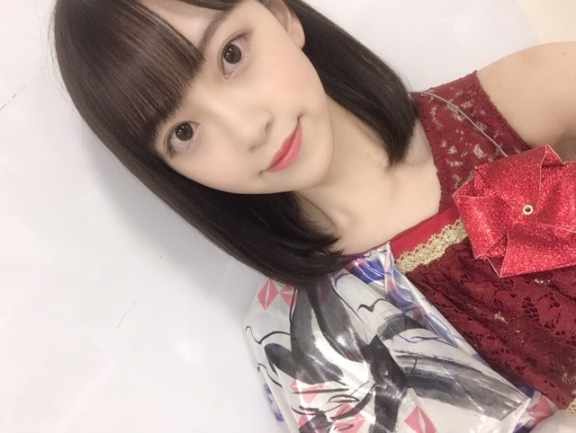
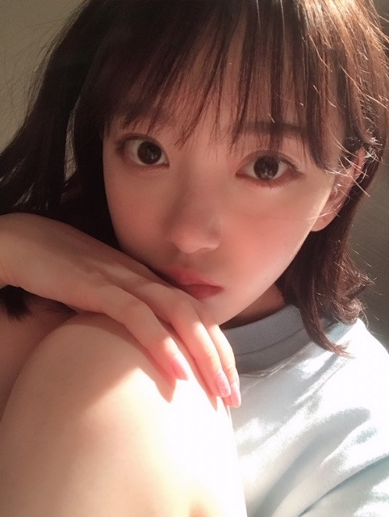

2019/0722Monいつから虫が怖くなったんだろう


カメラ向けるといつも犬みたいな顔してくる日奈子。
福岡ライブ無事、終わりました！
楽しかったなぁ☺︎
きてくださった皆さんの笑顔にたくさん元気をもらいました。ありがとうございます。
名古屋も終わり、残すところは大阪と神宮だー！

髪型珍しくストレートにしたの！
ストレート好きー？
絢音が楽屋の席となりだったんだけど、髪型見るなり
イイねってグッドポーズをくれました♡
いつも基本肯定してくれるし、髪型今日いいね！ってさらっと言ってくれたりするし人を傷つけない優しいところも大好きだし絢音みたいな人と付き合いたいなー！
よろしくねー！！
たのしもうねー！！
しおりと絢音と福岡ライブの楽屋でホットギミック について語り合えた。笑
真剣に観てくれてすきな作品って言ってくれて本当に嬉しいし挑戦して良かったって心から思えます
ありがとう☺︎
れなも、聖来も観てくれたみたい。
みんなありがとうー！！！
まだ上映中ですので是非✨

寝るのって大事。
笑うのって大事。
今日はたくさん友達と笑ったから
早く寝ます！昨日悪夢みたから今日はいい夢みれますように
みんなもね(^-^)
おやすみー
2019/07/22 21:06
コメント(434)
福岡お疲れさま！
ホットギミック観たよ。
私は動的な映画が好きなのですが、本作にも動的なものを感じました。良かったです。重要なシーンでの激しいカットの移り変わりや、また別のシーンでの畳みかけるような長台詞。山戸監督の映画は動的なので好きです。妹（茜）と妹の彼氏が別々の階段に座っているシーンや、妹と主人公（初）の二人のシーンに、ジェンダーについて感じるカットがあり良かったです。終盤、シーンが変わる事に主人公の気持ちも変わって、10代の恋心の移り変わりが非常にリアルに描かれていた。傑作だし、自分はこの作品が好きです。
次は天気の子だな。
ホットギミック観たよ。
私は動的な映画が好きなのですが、本作にも動的なものを感じました。良かったです。重要なシーンでの激しいカットの移り変わりや、また別のシーンでの畳みかけるような長台詞。山戸監督の映画は動的なので好きです。妹（茜）と妹の彼氏が別々の階段に座っているシーンや、妹と主人公（初）の二人のシーンに、ジェンダーについて感じるカットがあり良かったです。終盤、シーンが変わる事に主人公の気持ちも変わって、10代の恋心の移り変わりが非常にリアルに描かれていた。傑作だし、自分はこの作品が好きです。
次は天気の子だな。
未央奈ちゃんブログ更新有り難うございます。犬みたいな顔って笑っちゃいました。未央奈ちゃんの今は、なんとも言えない今だから今しか出せない美しさを感じます。魅力に溢れてまぶしいものを感じます。でもお身体には気をつけて無理しないで、無理しない程度に頑張って下さいね。応援してますよ。
未央奈ちゃんがストレートにしてるからかわいい！
ストレートが好きと言うよりは未央奈ちゃんが好き?
かわいくて元気出たのでこのあともお仕事頑張ります。
いっぱい寝てね？
おやすみなさい
ストレートが好きと言うよりは未央奈ちゃんが好き?
かわいくて元気出たのでこのあともお仕事頑張ります。
いっぱい寝てね？
おやすみなさい
未央奈～～～～～～～。
9/1神宮で待ってるよー。雨じゃぁ、なきゃぁいいなぁ。初未央奈。
9/1神宮で待ってるよー。雨じゃぁ、なきゃぁいいなぁ。初未央奈。
ブログ更新ありがとう！！
ストレート未央奈も大好き
ホットギミック見に行ったよ！未央奈の演技力に心が打たれた笑
ライブお疲れ様！
おやすみなさーい！！
ストレート未央奈も大好き
ホットギミック見に行ったよ！未央奈の演技力に心が打たれた笑
ライブお疲れ様！
おやすみなさーい！！
堀ちゃん、ブログ更新ありがとう。
福岡公演お疲れ様。
台風接近の中無事二日間完走できて本当に良かったね。
ゆっくり休んでね。
福岡公演お疲れ様。
台風接近の中無事二日間完走できて本当に良かったね。
ゆっくり休んでね。
ストレートも好きだけどポニテが一番かなぁー
みおな、福岡ライブ2Daysお疲れ様(^ー^)
ライブ行きたいけど全然当たらない( ノД`)…
ストレートも好きだよ(*￣∇￣)ノ
よく似合ってる(^^)d
凄くかわいいね(*´∀｀)
ホットギミックについて語り合えて良かったね(^o^)v
みおなの演技に心打たれた！
素晴らしい演技だったよ(^o^)v流石です！
初ちゃんはみおなにしか出来ないと思った！
また女優 堀未央奈が観たいなぁ(≧▽≦)
どんな悪夢みたのか気になる！
あまり無理しないでね(ToT)
おやすみおな！
ライブ行きたいけど全然当たらない( ノД`)…
ストレートも好きだよ(*￣∇￣)ノ
よく似合ってる(^^)d
凄くかわいいね(*´∀｀)
ホットギミックについて語り合えて良かったね(^o^)v
みおなの演技に心打たれた！
素晴らしい演技だったよ(^o^)v流石です！
初ちゃんはみおなにしか出来ないと思った！
また女優 堀未央奈が観たいなぁ(≧▽≦)
どんな悪夢みたのか気になる！
あまり無理しないでね(ToT)
おやすみおな！
福岡お疲れ様〜！
2日目たくさんトロッコ来てくれて嬉しかった〜！
ホットギミックすごく良かった︎☺︎
最近観た映画で1番面白かった！
2日目たくさんトロッコ来てくれて嬉しかった〜！
ホットギミックすごく良かった︎☺︎
最近観た映画で1番面白かった！
未央奈ブログ更新ありがとう！
福岡公演お疲れ様！
雨の中本当にLIVEありがとう！
ファンの方と一緒に楽しめたみたいで良かった！
ケータリングはどんな感じだったのかな？
またケータリングの事も教えて欲しいな！
未央奈のストレート好きだよ！
ストレートの未央奈もめっちゃ可愛い！
睡眠と笑うの大事だよね！
LIVEで疲れたと思うのでゆっくり休んで下さい！
福岡公演お疲れ様！
雨の中本当にLIVEありがとう！
ファンの方と一緒に楽しめたみたいで良かった！
ケータリングはどんな感じだったのかな？
またケータリングの事も教えて欲しいな！
未央奈のストレート好きだよ！
ストレートの未央奈もめっちゃ可愛い！
睡眠と笑うの大事だよね！
LIVEで疲れたと思うのでゆっくり休んで下さい！
LIVEお疲れ様
好き♡♡
好き♡♡
おつかれ！うちも、ライブ行きたい！広島でもライブしてほしい！広島でライブせんの？
未央奈、ほんまにホットギミック最高だったよ！
なんか分からんけど、涙出てきた
未央奈の演技だーいすき！広島にも遊びに来てね！広島ゆーてもうちは、三次市っていう田舎住んどる！星がめっちゃきれいだから！
これからも応援する！
未央奈、ほんまにホットギミック最高だったよ！
なんか分からんけど、涙出てきた
未央奈の演技だーいすき！広島にも遊びに来てね！広島ゆーてもうちは、三次市っていう田舎住んどる！星がめっちゃきれいだから！
これからも応援する！
福岡ライブお疲れ様です！
1日目も2日目もめっちゃ良かった！！福岡に来てくれてありがとうね✨✨
まだ大阪神宮あるけど頑張ってねーー！！
1日目も2日目もめっちゃ良かった！！福岡に来てくれてありがとうね✨✨
まだ大阪神宮あるけど頑張ってねーー！！
みおちゃんブログ更新ありがとう！
福岡公演お疲れ様(⁎˃ᴗ˂⁎)
ストレートもかわいい♡
ホットギミック語り合いに
参戦したいな笑笑
豊洲でまだやってるから行くね！
握手会にはTシャツ着ていこうかな︎☺︎
福岡公演お疲れ様(⁎˃ᴗ˂⁎)
ストレートもかわいい♡
ホットギミック語り合いに
参戦したいな笑笑
豊洲でまだやってるから行くね！
握手会にはTシャツ着ていこうかな︎☺︎
ストレートの髪型で、メイク変えたからかな？品のあるお嬢様に見えるよ。もちろん可愛いです。福岡でのライブ楽しめたのですね。それは何よりです。歌番組に握手会と忙しい日々が続きますね。刃のような言葉で傷つくことが多い職業だと思います。絆創膏や傷薬になれたらいいのにと切に思うのですが。未央奈にとってはメンバーや友達がその役割を果たしているのですね。素敵な夢を見て下さいね。
未央ちゃん ライブお疲れさまでした
ストレートも大人っぽくていい
夢で未央ちゃんが出てきますように
ストレートも大人っぽくていい
夢で未央ちゃんが出てきますように
みおちゃんブログ更新ありがとう♪
福岡本当にありがとう＼(^o^)／
めちゃくちゃ楽しかった
土曜はスタンドから、日曜はアリーナならみおちゃん、乃木坂ちゃん達に全力で声援を送ったけど届いたかな？(^-^)
俺にとって最高の夏が開幕したよ( ^_^)／
福岡しか行けないけど、あとの大阪、神宮は福岡から魂送ります！！
だいすきだよ ❤
福岡のトゥモロー⊿
福岡本当にありがとう＼(^o^)／
めちゃくちゃ楽しかった
土曜はスタンドから、日曜はアリーナならみおちゃん、乃木坂ちゃん達に全力で声援を送ったけど届いたかな？(^-^)
俺にとって最高の夏が開幕したよ( ^_^)／
福岡しか行けないけど、あとの大阪、神宮は福岡から魂送ります！！
だいすきだよ ❤
福岡のトゥモロー⊿
ブログ更新ありがとう！ライブお疲れ様！
ストレートかわいいよー
しっかり休んでね！
ストレートかわいいよー
しっかり休んでね！
福岡ライブ、お疲れ様でした♪
ストレート珍しいね！可愛い❤
こないだ、美容院に行ったんやけど
みおなちゃんのボブの写真見せて
こんな感じで..ってお願いしたの☺
軽くなったし、スッキリしました
ストレート珍しいね！可愛い❤
こないだ、美容院に行ったんやけど
みおなちゃんのボブの写真見せて
こんな感じで..ってお願いしたの☺
軽くなったし、スッキリしました
堀ちゃん 福岡公演お疲れ様です！
2日間堀ちゃん見れて幸せでした！１日目も２日目の髪型両方似合ってました！
大阪公演も楽しみです！
体調に気をつけてください！
2日間堀ちゃん見れて幸せでした！１日目も２日目の髪型両方似合ってました！
大阪公演も楽しみです！
体調に気をつけてください！
こんばんは。 ライブ終わりの写真は、いつ見ても良いです。
充実感が、漲っているようです。
未央奈さんセンターの、自由の彼方 の評判が高いです。
特典映像アンダラ武道館での、未央奈さんの、闘志溢れる眼光が
すぐに、目に浮かびました。
自分も来月末には、そのテンションを、同じ空間で、体感、共有し
たいです。 未央奈さんの、孤軍奮闘に、乾杯！
みおな好き
ボブのストレートの未央奈ちゃんが一番好き！！
みおな☆
福岡おつかれさま！
名古屋2日間行きました！福岡も行きたかった。。笑
9月1日の神宮に行きます！
今から楽しみで楽しみでしょーがない！！笑
福岡おつかれさま！
名古屋2日間行きました！福岡も行きたかった。。笑
9月1日の神宮に行きます！
今から楽しみで楽しみでしょーがない！！笑
ブログ更新ありがとう
ライブお疲れ様です
ストレート似合ってますよ＼(^-^)／
これからのライブも頑張って下さい☺
ライブお疲れ様です
ストレート似合ってますよ＼(^-^)／
これからのライブも頑張って下さい☺
す、す、す、す、好きだーーーーーーー！！！
おれストレート大好きっす。
でも、堀未央奈さんの事が好きなのでオールオッケー！
おれストレート大好きっす。
でも、堀未央奈さんの事が好きなのでオールオッケー！
堀未央奈❤こんばんは 二日間の福岡ライブご苦労様❗楽しかったかな？未央奈今日珍しくストレートにしたんだね 可愛いよ(#^.^#)未央奈似合ってるよ(*^_^*)俺は、好きだな❤明日も頑張ってね 未央奈大大大大大大大大大大大大大大好きだよ❤愛してる ♥❤未央奈凄く可愛い(*^_^*)
更新有難う！
御疲れ様でした！
とても可愛い。
何時も頑張って下さい、
常に必ずしても応援しています。
どうか御身体に気を付けて下さい！
ずっと大好き！
御疲れ様でした！
とても可愛い。
何時も頑張って下さい、
常に必ずしても応援しています。
どうか御身体に気を付けて下さい！
ずっと大好き！
ストレートも好きいいい！
あ、ブログ更新ありがとうございます。
福岡2日間、お疲れ様でした。
私も早くライブ行きたいです。
私は今年は神宮2日目しか行けないけど、とっても楽しみにしてます。
ホットギミックの感想も早く握手会でお伝えしたい！
未央奈ちゃんに会えるその日まで、仕事頑張るねえ。
あ、ブログ更新ありがとうございます。
福岡2日間、お疲れ様でした。
私も早くライブ行きたいです。
私は今年は神宮2日目しか行けないけど、とっても楽しみにしてます。
ホットギミックの感想も早く握手会でお伝えしたい！
未央奈ちゃんに会えるその日まで、仕事頑張るねえ。
福岡お疲れでしたー
外はすごい雨でしたが、ヤフオクは快晴でしたねー‼️体調に気をつけて、残りの2公演も頑張ってください！
ストレート好きです。未央奈ちゃんが好きです❤️
おーやーすーみー♪
外はすごい雨でしたが、ヤフオクは快晴でしたねー‼️体調に気をつけて、残りの2公演も頑張ってください！
ストレート好きです。未央奈ちゃんが好きです❤️
おーやーすーみー♪
ライブお疲れ様
ストレート好き！
未央奈のことも好きー！
ストレート好き！
未央奈のことも好きー！
ホットギミックの感想早く言いたい〜
絢音ちゃんと久保ちゃんと仲良しなの微笑ましいね
おやすみ！
絢音ちゃんと久保ちゃんと仲良しなの微笑ましいね
おやすみ！
堀ちゃん、ブログ更新ありがとう〜
福岡ライブ行けなかったけれど、
大阪、神宮ライブ行きます！
堀ちゃんタオル、全力で振るから見つけてねー
堀北コンビ最高！
そして、絢音ちゃんの優しさにほっこりします！
2期生最高！
堀ちゃん、大好きだよー
福岡ライブ行けなかったけれど、
大阪、神宮ライブ行きます！
堀ちゃんタオル、全力で振るから見つけてねー
堀北コンビ最高！
そして、絢音ちゃんの優しさにほっこりします！
2期生最高！
堀ちゃん、大好きだよー
未央奈ちゃん福岡ライブお疲れ様。
日奈子ちゃんと仲良し最高です。
日奈子ちゃんといると、楽しい顔
みれて幸せそう。何回観ても２期生
ツーショット最高。髪型ストレート、
いつもの、未央奈ちゃんと、雰囲気が、
違う姿を、感じた似合ってかわいい最高。
これからも髪型ストレート観てみたいので
お願いします。それでは。のこりのツアー
頑張ってください。ファイトです。
またの、ブログ更新待ってます。
それではいい夢、見れるように
ライブお疲れ様でした。
日奈子ちゃんと仲良し最高です。
日奈子ちゃんといると、楽しい顔
みれて幸せそう。何回観ても２期生
ツーショット最高。髪型ストレート、
いつもの、未央奈ちゃんと、雰囲気が、
違う姿を、感じた似合ってかわいい最高。
これからも髪型ストレート観てみたいので
お願いします。それでは。のこりのツアー
頑張ってください。ファイトです。
またの、ブログ更新待ってます。
それではいい夢、見れるように
ライブお疲れ様でした。
福岡ライブ2Dayお疲れ様！
両日共に最高に楽しかったよ！
ストレート好きだよ！
未央奈のストレート可愛すぎた！
登場した時、「おっ！」ってなったもん！
堀北コンビ大好きだから、二人が仲良くしてる写真が見れて嬉しい！
ありがとね！
両日共に最高に楽しかったよ！
ストレート好きだよ！
未央奈のストレート可愛すぎた！
登場した時、「おっ！」ってなったもん！
堀北コンビ大好きだから、二人が仲良くしてる写真が見れて嬉しい！
ありがとね！
ライブお疲れ様でした！本当に寝ることも笑うことも大事なことですね！体調崩さず、頑張ってください
福岡ライブお疲れ様です(^-^)
体調だけは崩さずに無理しない程度で頑張ってくださいなー
虫は嫌いじゃないですけど、ミミズは絶対無理です
映画 チャイルドプレイ面白そうですよーー
高温多湿に負けないで夏を楽しんでください！┌(┌＾o＾)┐
体調だけは崩さずに無理しない程度で頑張ってくださいなー
虫は嫌いじゃないですけど、ミミズは絶対無理です
映画 チャイルドプレイ面白そうですよーー
高温多湿に負けないで夏を楽しんでください！┌(┌＾o＾)┐
ライブお疲れさま～
きいちゃんに絢音ちゃん、れなちさん。
二期生エピソード嬉しいです
ストレートヘアいいね～
一番好きかも。
あ、念のため言っておくけど、基本どの髪型も好きですよ？(笑)
さて、選抜発表について、遅くなっちゃったけどフロントおめでとう！
毎回、なかなか心の整理がつかないんです。
毎回、二期生もっと入っててほしいなぁって思うばかりです。
そして、シングル発売が決まったということは、個握ですよね～
めっちゃ久しぶりだね～
未央奈の誕生日が近いことだし、１０月の握手会行こうかなぁ～って思ったら、まさかの宮城…遠い～( ；∀；)
ということで、１１月の握手会に行こうかなぁ～
…って思ったら、未央奈さん１１月９日の握手会しかいないじゃないですかぁ～
ということは、その日の握手会に出没するかもしれませんね(笑)
たしか、２月以来かな？
間が９ヶ月も…
未央奈に完全に忘れ去られてるんじゃないかと不安も抱えながら、お誕生日おめでとうを伝えに行きます(笑)
ということで、寝ることってすごく大事なのでそろそろ寝ます(笑)
では✋
てんちょ
きいちゃんに絢音ちゃん、れなちさん。
二期生エピソード嬉しいです
ストレートヘアいいね～
一番好きかも。
あ、念のため言っておくけど、基本どの髪型も好きですよ？(笑)
さて、選抜発表について、遅くなっちゃったけどフロントおめでとう！
毎回、なかなか心の整理がつかないんです。
毎回、二期生もっと入っててほしいなぁって思うばかりです。
そして、シングル発売が決まったということは、個握ですよね～
めっちゃ久しぶりだね～
未央奈の誕生日が近いことだし、１０月の握手会行こうかなぁ～って思ったら、まさかの宮城…遠い～( ；∀；)
ということで、１１月の握手会に行こうかなぁ～
…って思ったら、未央奈さん１１月９日の握手会しかいないじゃないですかぁ～
ということは、その日の握手会に出没するかもしれませんね(笑)
たしか、２月以来かな？
間が９ヶ月も…
未央奈に完全に忘れ去られてるんじゃないかと不安も抱えながら、お誕生日おめでとうを伝えに行きます(笑)
ということで、寝ることってすごく大事なのでそろそろ寝ます(笑)
では✋
てんちょ
大阪待ってるで！
わっさー！
わっさー！
福岡2days楽しかった！！
レス貰えんやったけど（泣）
次は神宮初日！
レス貰えんやったけど（泣）
次は神宮初日！
福岡ライブ、お疲れさま～☆ そして、日奈子ちゃんとの超絶可愛すぎる2ショット!!(〃▽〃) ストレートヘアーもすんごく似合ってるねぇ♪♪ 絢音ちゃんみたいな男子がタイプ...。自分は男子だから、絢音ちゃんの内面を見習うことにする!!(*´-`)ﾉ笑
福岡行きました！スタンド側でみおなちゃん来た時手振ってたら多分ふりかえしてくれた、、？って感じなんですけどほんとにすぐそこの距離でかわいすぎました。。
ストレートだいすきです！これからもみおなちゃんだいすき！
ストレートだいすきです！これからもみおなちゃんだいすき！
お疲れ様です！いい夢みれますように
ストレート髪型も可愛いですよ好きですよ
あれー ほりちゃんの髪型は僕はなんでも好き気がします （笑）
風邪を引かないでなー！
bye bye
ストレート髪型も可愛いですよ好きですよ
あれー ほりちゃんの髪型は僕はなんでも好き気がします （笑）
風邪を引かないでなー！
bye bye
ブログ更新ありがと～！
ストレートかわいいねd('∀'*)
好きです！
沢山食べて、笑って行きましょう
おやすみなさい(ρω*)ﾉ
ストレートかわいいねd('∀'*)
好きです！
沢山食べて、笑って行きましょう
おやすみなさい(ρω*)ﾉ
ストレートヘアも好き！
2人ともなんちゅー可愛さやねん！！
色んな髪型してくれるから嬉しいです！
色んな髪型してくれるから嬉しいです！
福岡お疲れ様でした！！
2日間行くことが出来て花道の横でとても楽しかったです！
名古屋も行ったんですけど未央奈ちゃんが何回も一番近くに来てめっちゃ可愛かったです！
ホットギミックまだ行く時間がなくて行けてないので早く行きたいです！
また、神宮も行くので楽しみにしています！
2日間行くことが出来て花道の横でとても楽しかったです！
名古屋も行ったんですけど未央奈ちゃんが何回も一番近くに来てめっちゃ可愛かったです！
ホットギミックまだ行く時間がなくて行けてないので早く行きたいです！
また、神宮も行くので楽しみにしています！
福岡ライブお疲れ様でした！
2日とも参加したよ！1日目と2日目髪型変わってたけど、どっちも可愛くて見惚れちゃいました！
今度の大阪での全握、ライブ行くときにはどんな髪型なのか楽しみにしながら待っておきます！
おやすみなさい！
2日とも参加したよ！1日目と2日目髪型変わってたけど、どっちも可愛くて見惚れちゃいました！
今度の大阪での全握、ライブ行くときにはどんな髪型なのか楽しみにしながら待っておきます！
おやすみなさい！
更新ありがとう
髪型ストレートもかわいい

未央奈ちゃんは何でも似合うね
未央奈ちゃんがする髪型は何でも大好き
体調に気をつけて最後までライブがんばれー
応援してます
髪型ストレートもかわいい
未央奈ちゃんは何でも似合うね
未央奈ちゃんがする髪型は何でも大好き
体調に気をつけて最後までライブがんばれー
応援してます


黒髪ストレートは古風だけど王道よね！